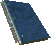
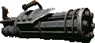
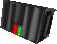
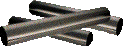

Category:Big Guns
Jump to navigation
Jump to search
See the bottom of this page for a list of all the big guns a player can use in FOnline 2.
List of Tier 0 Big Guns
Flamer

| |
|---|---|
| A Flambe 450 model flamethrower, varmiter variation. Fires a short spray of extremely hot, flamable liquid. Requires specialized fuel to work properly. Min ST: 6. | |
| Damage | 45 - 65 |
| Use | AP: 6 |
| Range | 6 |
| Damage type | Fire |
| Ammo |  or or
|
| Ammo capacity | 5 |
| Weapon Perk | None |
| Strength reqiuired | 6 |
| Item Durability | 100 |
| Weight | 8164 grams |
| Base price | 2000 caps |
| Exp for Crafting | 255 |
| Blueprint | No |
| Requirments to craft: | 1x 2x  Big Guns 60% or Profession: Gunsmith 1 |
| Notes | A truly basic big gun. Its low damage and terrible range make it quite useless. |
List of Tier 1 Big Guns
M60

| |
|---|---|
| This relatively light machine gun was prized by militaries around for world for its high rate of fire. This reliable, battlefield-proven design, was used on vehicles and for squad level fire-support. Min ST: 7. | |
| Damage | 20 - 28 |
| Burst | AP: 7(10 Bullet in burst) |
| Range | 30 |
| Damage type | Normal |
| Ammo | 
|
| Ammo capacity | 100 |
| Weapon Perk | None |
| Strength required | 7 |
| Item Durability | 100 |
| Weight | 10432 grams |
| Base price | 3500 caps |
| Exp for Crafting | 340 |
| Blueprint | Yes |
| Requirements to craft: | 5x3x1x 1x Profession: Gunsmith 1 |
| Notes | A quite basic big gun. Compared to minigun its inferior - mostly due to lower damage on 1-hex. |
Minigun

| |
|---|---|
| A Rockwell CZ53 Personal Minigun. A multi-barreled chaingun firing 5mm ammunition at over 60,000 RPM. Min ST: 7. | |
| Damage | 11 - 14 |
| Burst | AP: 7(30 Bullets in burst.) |
| Range | 32 |
| Damage type | Normal |
| Ammo |  or or 
|
| Ammo capacity | 120 |
| Weapon Perk | Long Range |
| Strength required | 7 |
| Item Durability | 100 |
| Weight | 12700 grams |
| Base price | 3800 caps |
| Exp for Crafting | 760 |
| Blueprint | Yes |
| Requirements to craft: | 6x3x1x Profession: Gunsmith 2 |
| Notes | A standard big gun preferred by many players. It's quite easy to craft and works greatly with bonus range damage perks. |
List of Tier 2 Big Guns
Improved Flamer

| |
|---|---|
| A Flambe 450 model flamethrower, varmiter variation. Fires a short spray of extremely hot, flammable liquid. Requires specialized fuel to work properly. This model has been modified to fire a hotter mixture which causes greater combustibility. Min ST: 6. | |
| Damage | 100 - 110 |
| Use | AP: 7 |
| Range | 7 |
| Damage type | Fire |
| Ammo | or
|
| Ammo capacity | 5 |
| Weapon Perk | Flameboy |
| Strength required | 6 |
| Item Durability | 100 |
| Weight | 8618 grams |
| Base price | 2000 caps |
| Exp for Crafting | 170 |
| Blueprint | Yes |
| Requirements to craft: | 1x1x Profession: Gunsmith 2 |
| Notes | A good farming tool, solid weapon for PvE and it has its uses in PvP battles also. |
Rocket Launcher

| |
|---|---|
| A Rockwell BigBazooka rocket launcher. With the deluxe 3 lb. trigger. Fires AP or Explosive Rockets. Min ST: 6. | |
| Damage | 80 - 100 |
| Single | AP: 7 |
| Range | 40 |
| Damage type | Explode |
| Ammo | |
| Ammo capacity | 1 |
| Weapon Perk | Long Range |
| Strength required | 6 |
| Item Durability | 100 |
| Weight | 6803 grams |
| Base price | 2300 caps |
| Exp for Crafting | 275 |
| Blueprint | Yes |
| Requirements to craft: | 4x1x1x Profession: Gunsmith 2 |
| Notes | Greatest support weapon in the game. Target of attack will be knocked down. An Hex shooting attack mode can be performed with this item. When targeting with this item you will see Arena of Effect in form of red circle. |
Light Support Weapon

| |
|---|---|
| This squad-level support weapon has a bullpup design. The bullpup design makes it difficult to use while lying down. Because of this it was remanded to National Guard units. It, however, earned a reputation as a reliable weapon that packs a lot of punch for its size. Min ST: 6. | |
| Damage | 34 - 40 |
| Burst | AP: 7(10 Bullets in burst.) |
| Range | 35 |
| Damage type | Normal |
| Ammo | 
|
| Ammo capacity | 30 |
| Weapon Perk | None |
| Strength required | 6 |
| Item Durability | 100 |
| Weight | 9071 grams |
| Base price | 4750 caps |
| Exp for Crafting | 410 |
| Blueprint | Recipe |
| Requirements to craft: | 3x4x1x1x Profession: Gunsmith 2 |
| Notes | This is a solid big gun that can deal some nasty damage even by those who do not have bonus range damage perks (unlike miniguns). |
List of Tier 3 Big Guns
Avenger Minigun

| |
|---|---|
| Rockwell designed the Avenger as the replacement for their aging CZ53 Personal Minigun. The Avenger's design improvements include improved, gel-fin, cooling and chromium plated barrel-bores. This gives it a greater range and lethality. Min ST: 7. | |
| Damage | 12 - 15 |
| Burst | AP: 7(40 Bullets in burst.) |
| Range | 35 |
| Damage type | Normal |
| Ammo | or
|
| Ammo capacity | 120 |
| Weapon Perk | - |
| Strength required | 7 |
| Item Durability | 100 |
| Weight | 12700 grams |
| Base price | 5500 caps |
| Exp for Crafting | 250 |
| Blueprint | Recipe |
| Requirements to craft: | 1x1x 1x1x Profession: Gunsmith 3 |
| Notes | The best craftable Big Gun, used mostly for Players vs Players fights. Its eating a ton of ammo for each burst but its also producing tons of damage, its also got nice range for a bursting gun. |
List of Tier 4 Big Guns
Bozar
| The ultimate refinement of the sniper's art. Although, somewhat finicky and prone to jamming if not kept scrupulously clean, the big weapon's accuracy more than makes up for its extra maintenance requirements. Min ST: 6. | |
|---|---|
| Damage | 35 - 55 (For single shoots) 27-35 (In burst mode) |
| Single | AP: 7 |
| Burst | AP: 7(8 Bullets for burst) |
| Range | 50(40 for Burst) |
| Damage type | Normal |
| Ammo | 
|
| Ammo capacity | 16 |
| Weapon Perk | None |
| Strength required | 6 |
| Item Durability | 200 |
| Weight | 9071 grams |
| Base price | 5250 caps |
| Requirements to craft: | 1x1x 4x10x Can only be crafted at Vault City Assemble Line (extra crafting cost 100k) or at Sierra Army Depot Assembly Line (free of charge). |
| Notes | Sniper Rifle in Big Gun form (Yes you really can aim with it). Its burst mode is shooting bullets in straight line which means that bursting with it is as effective on 1-hex as on 40. True killing Machine. |
Vindicator Minigun
|  | |
|---|---|
| The German Rheinmetal AG company created the ultimate minigun. The Vindicator throws over 90,000 caseless shells per minute down its six carbon-polymer barrels. As the pinnacle of Teutonic engineering skill, it is the ultimate hand-held weapon. Min ST: 7. | |
| Damage | 14 - 19 |
| Burst | AP: 7(25 Bullets for burst) |
| Range | 30 |
| Damage type | Normal |
| Ammo |  |
| Ammo capacity | 100 |
| Weapon Perk | None |
| Strength required | 7 |
| Item Durability | 200 |
| Weight | 12700 grams |
| Base price | 15250 caps |
| Requirements to craft: | 1x1x1x 3x8x Can only be crafted at Vault City Assemble Line (extra crafting cost 100k) or at Sierra Army Depot Assembly Line (free of charge). |
| Notes | Rare and expensive weapon, which consumes rare type of ammonition. This weapon is capable of dealing a lot of damage on 1-hex range but its has also pretty mediocre damage on middle range. By experienced players its generally considered weaker than Bozar since getting to 1-hex range is not easy. Still this little toy packs a lot of firepower. |
Pages in category "Big Guns"
The following 9 pages are in this category, out of 9 total.